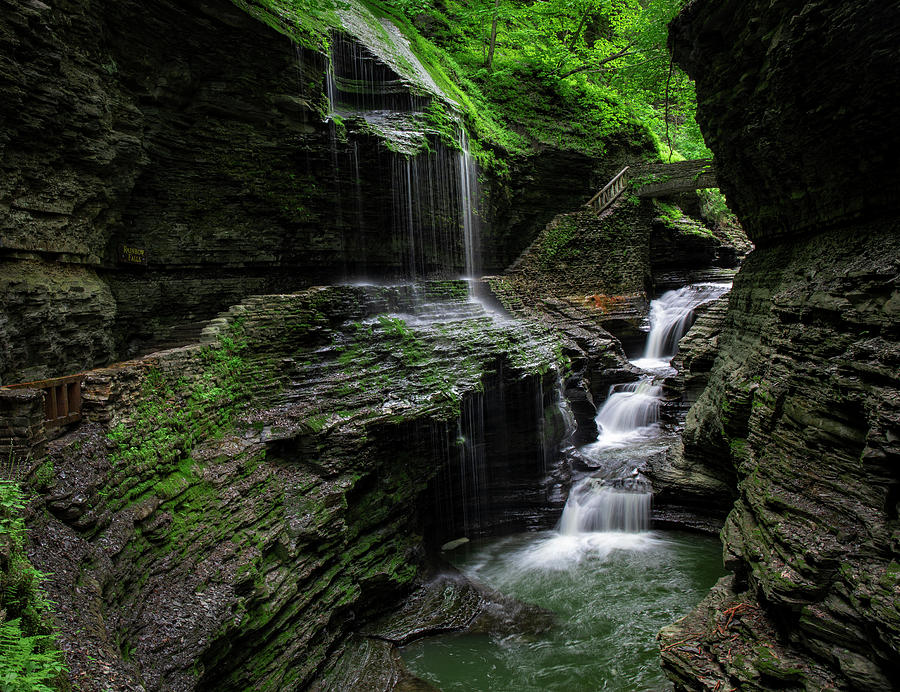
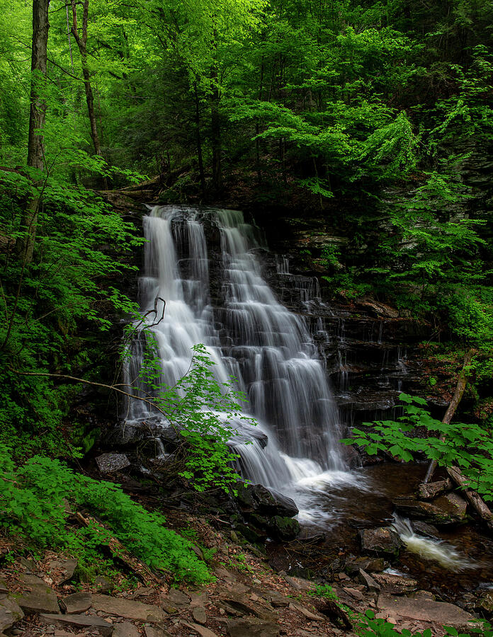
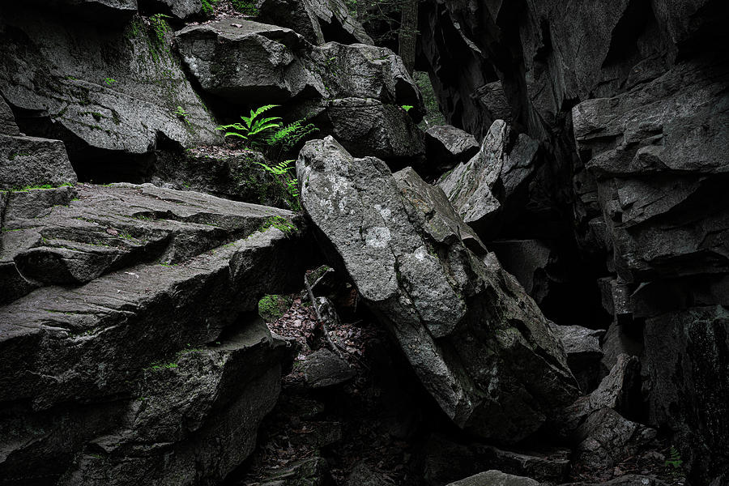
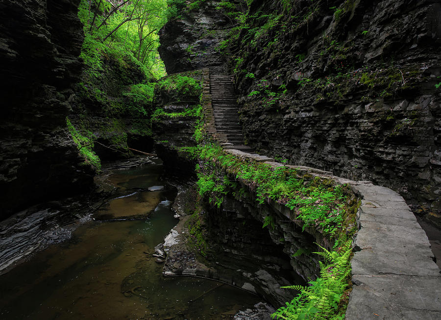
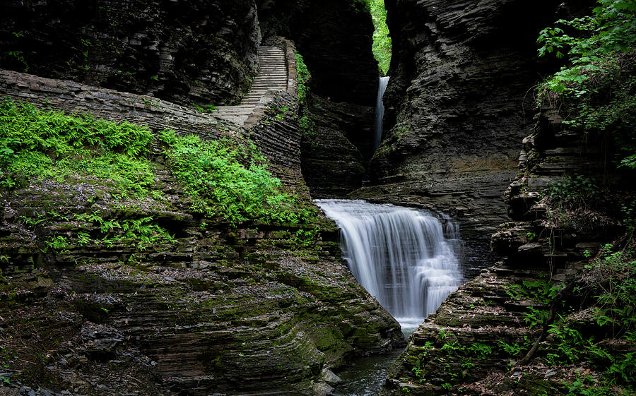
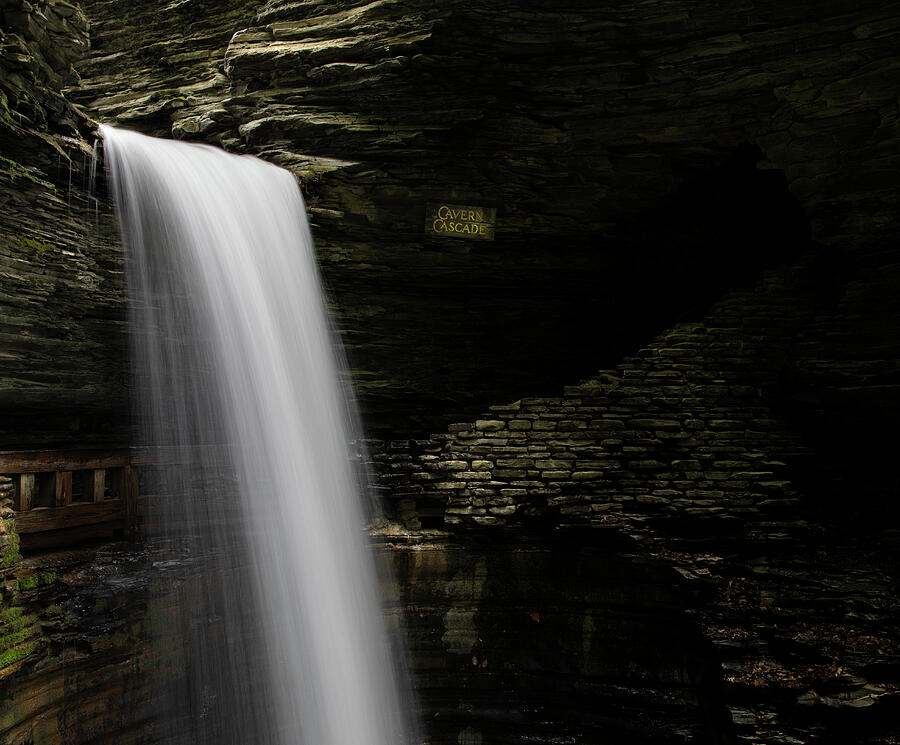

Ricketts Glen
Start early, hike only what you can do safely, and spend time with a few strong falls rather than trying to force every possible composition. Dark forest light and wet stone can be beautiful, but they slow everything down.
A practical guide to visiting two of the Northeast's best waterfall parks on the same spring photography trip — with trail notes, timing advice, field observations, and finished waterfall prints from Ricketts Glen State Park in Pennsylvania and Watkins Glen State Park in New York.
Ricketts Glen and Watkins Glen are different enough to make a strong paired trip: Ricketts Glen feels wilder and forested, while Watkins Glen is more architectural, carved, and immersive inside the gorge. Spring brings fresh greens, active water, cooler hiking weather, and usually a quieter feel than peak summer weekends.
After gorge trails are open and before peak summer crowds build.
One focused day at each park, with a third day for weather or slower photography.
The official park page lists 22 named waterfalls, including 94-foot Ganoga Falls.
New York State Parks lists 19 waterfalls along the Gorge Trail's 1-mile stretch.
I like pairing these parks because they give you two very different versions of Northeast waterfall country. Ricketts Glen is darker, greener, and more forest-driven. The waterfalls appear one after another through rock-strewn clefts, and the best compositions often come from slowing down and watching how the trail, water, ferns, and ledges fit together.
Watkins Glen feels more sculpted and architectural. The gorge is tighter, the stonework is part of the experience, and the trail moves over, under, and alongside waterfalls in a way that feels almost designed for photography. On a spring trip, the fresh greens and steady water flow give both parks the atmosphere I look for in finished waterfall prints.
My recommendation: Do not try to rush both parks in one long day. They deserve separate mornings. If photography matters, give each park its own early start and leave room for wet trails, changing light, and slower compositions.
For this trip, late spring is usually the sweet spot. The forests have started to green up, waterfalls tend to have better flow than late summer, and crowds are often lighter than peak vacation season. It is also a good time for long-exposure waterfall photography because overcast light and filtered forest shade are common.
Watkins Glen requires extra planning because the Gorge Trail is seasonal. New York State Parks lists the Gorge Trail as opening for the 2026 season on May 9 and notes that it typically closes in mid-October, depending on weather and conditions. Always check the official park page before driving, especially early or late in the season.
Ricketts Glen State Park is in northeastern Pennsylvania near Benton. The official Pennsylvania DCNR page describes it as a 13,193-acre park with the Glens Natural Area, a National Natural Landmark, and a Falls Trail System that explores wild, free-flowing waterfalls through ancient rock clefts. Ganoga Falls is the tallest at 94 feet.
The park is beautiful, but this is not a casual paved waterfall overlook experience. Expect stone steps, wet rock, elevation change, slippery sections, and uneven footing. I would not carry more photography gear than you are willing to hike with carefully. A small tripod, lens cloths, rain cover, and a polarizer are more useful here than a heavy bag full of options.
Watkins Glen State Park is in New York's Finger Lakes region. The official New York State Parks page describes a gorge where the stream descends 400 feet past 200-foot cliffs, creating 19 waterfalls along its course. The Gorge Trail is the classic experience, with stone steps, bridges, tunnels, and views that move through the spray of Cavern Cascade.
Compared with Ricketts Glen, Watkins Glen often feels tighter and more dramatic. You are working with stone walls, staircases, curves in the trail, and water dropping through a narrow space. It rewards wide-angle compositions, but it also rewards patience because people, mist, and bright patches of sky can make clean frames difficult.
If I were planning this as a focused waterfall photography trip, I would keep it simple. Start with Ricketts Glen, spend the night somewhere that makes the drive to the Finger Lakes manageable, then photograph Watkins Glen the next morning. A third day gives you room for weather, rest, sunrise scouting, or returning to whichever park had the better conditions.
A two-day trip works if you are comfortable with a busy pace. A three-day trip is much better if photography is the priority. Waterfall photography is slow work. You stop, wipe spray off the lens, adjust exposure, wait for people to pass, and rethink compositions as light changes.



Each image below opens in my secure print storefront, where you can choose paper, framed print, canvas, metal, acrylic, size, mat, and frame options.
.jpg)
I liked this quieter stretch because it shows the park between the waterfalls — dark water, green spring forest, and the kind of movement that makes the whole glen feel alive.
Shop This PrintErie Falls had the kind of spring green I hope for on waterfall trips. The water was strong enough to hold the frame, but the forest still felt soft around it.
Shop This Print
This one felt especially calm to me. The wide curtain of water and dark pool gave the scene a simple rhythm without needing much sky or extra detail.
Shop This PrintNot every strong image from Ricketts Glen needs to be a waterfall. I liked this frame because the stone steps, dark gorge walls, and green growth tell the story of the hike itself.
Shop This Print
The spring color in Watkins Glen can be intense, especially against the dark gorge walls. I kept this image for that contrast between bright new leaves and old stone.
Shop This PrintThis part of Watkins Glen has the layered feeling I love: falling water, stone railings, narrow passageways, and a sense that the gorge keeps turning just beyond the frame.
Shop This Print
I used a wider view here because the trail is part of the story. Watkins Glen is not just water and rock — it is also the way the path moves you through the gorge.
Shop This Print
Cavern Cascade is one of those places where the darkness of the gorge makes the water feel even brighter. I liked the simple contrast of white water against layered stone.
Shop This PrintA spring trip works best when you give yourself enough time to work around weather and trail conditions. Waterfalls are better in soft light, and both parks reward patience more than speed.
Start early, hike only what you can do safely, and spend time with a few strong falls rather than trying to force every possible composition. Dark forest light and wet stone can be beautiful, but they slow everything down.
Use the travel day to reset, dry gear, check trail updates, and scout the next morning. If weather is rainy or overcast, that may actually be a good thing for waterfall photography.
Photograph the gorge early if possible. Work wide for the trail and stonework, then tighten compositions around water movement, rock texture, and the darker sections of the gorge.
The biggest lesson from photographing Ricketts Glen and Watkins Glen together is that both places need restraint. It is tempting to photograph every waterfall the same way, but the stronger images usually come from treating each scene differently.
Harsh sun creates bright patches on water and deep shadows on rock, which can be difficult in narrow gorges. Cloud cover, mist, or light rain often creates a cleaner, softer look.
Both parks can put mist on your lens quickly. I keep a cloth easily accessible and check the front element more often than I think I need to.
Watkins Glen especially is as much about the trail and stonework as it is about individual waterfalls. Including steps, railings, bridges, or curves in the path can make the image feel more immersive.
Wet stone, stairs, and uneven trails make heavy gear less enjoyable. A simple kit is usually better: one useful zoom, tripod if conditions allow, polarizer, lens cloths, and weather protection.
Yes. They make a strong paired waterfall road trip, especially with two or three days. Trying to photograph both well in a single day would feel rushed.
For photography, often yes. Spring usually means fresher greens, stronger water flow, cooler hiking temperatures, and fewer crowds than peak summer weekends.
They are different. Ricketts Glen feels wilder and more forested. Watkins Glen feels more architectural and gorge-focused. I would photograph both if time allows.
No. The Gorge Trail is seasonal and weather-dependent. New York State Parks says it typically opens mid to late May and closes mid-October. Check the official park page before traveling.
Yes. Pennsylvania DCNR notes that cell service can be unpredictable around many state parks, and Watkins Glen trail access can change by season or construction.
Yes. The image cards above link directly to my print storefront, where you can choose size, frame, canvas, acrylic, metal, or paper options.
Planning sources: Park facts and seasonal notes were checked against the official Pennsylvania DCNR Ricketts Glen State Park page and the official New York State Parks Watkins Glen State Park page. Always confirm current trail status, hours, fees, closures, and safety notices before traveling.